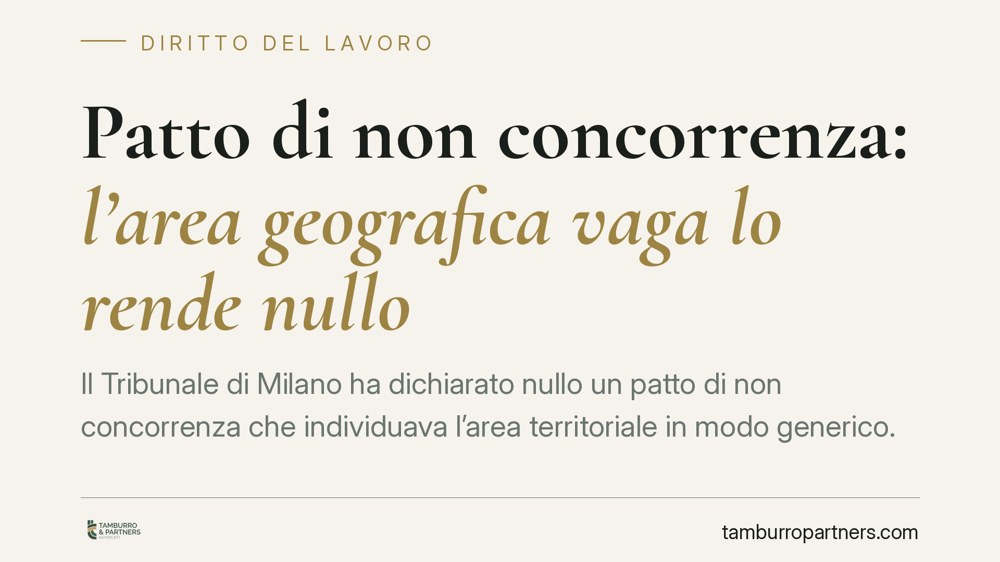

Patto di non concorrenza: l'area geografica vaga lo rende nullo
Il Tribunale di Milano ha dichiarato nullo un patto di non concorrenza che individuava l'area territoriale in modo generico. Senza confini precisi il vincolo limita in misura eccessiva la libertà professionale del lavoratore e viola l'art. 2125 del Codice civile. La decisione impone a datori di lavoro e dipendenti di rivedere con attenzione le clausole già sottoscritte.

Il fatto
Un istituto bancario aveva vincolato un *private banker* (il consulente che gestisce i patrimoni della clientela facoltosa) con un patto di non concorrenza. La clausola gli impediva, dopo la cessazione del rapporto, di svolgere attività concorrente in un'area descritta in termini ampi e indefiniti.
Il Tribunale di Milano, con pronuncia del 2 aprile 2026, ha dichiarato nullo il patto. Il motivo è semplice: l'oggetto del vincolo, quanto all'estensione geografica, non era determinato né determinabile. Il lavoratore non poteva sapere con certezza dove gli fosse precluso operare.
Inquadramento normativo
Il patto di non concorrenza è disciplinato dall'art. 2125 del Codice civile. La norma stabilisce che il patto con cui si limita l'attività del lavoratore per il tempo successivo alla cessazione del contratto è nullo se non risultano contemporaneamente quattro requisiti: la forma scritta, la previsione di un corrispettivo a favore del lavoratore, e i limiti di oggetto, di tempo e di luogo.
Il secondo comma fissa anche la durata massima: cinque anni per i dirigenti, tre anni per gli altri lavoratori. Un termine superiore si riduce automaticamente entro questi limiti.
Il punto centrale della decisione riguarda il limite di luogo. La giurisprudenza è costante nel ritenere che i tre limiti (oggetto, tempo, luogo) debbano essere valutati in combinazione tra loro. Più ampio è uno, più ristretti devono essere gli altri, affinché il vincolo non comprima del tutto la possibilità del lavoratore di impiegare la propria professionalità. Un'area geografica indeterminata rende impossibile questa valutazione di proporzionalità e svuota la tutela prevista dall'art. 2125.
Cosa cambia in concreto
La pronuncia conferma un orientamento che incide direttamente sulla redazione delle clausole. Non basta inserire un riferimento territoriale qualsiasi: serve un confine identificabile.
Formule come "il territorio in cui opera l'azienda" o "le aree in cui il datore svolge la propria attività" sono a rischio quando l'impresa ha un raggio d'azione esteso o variabile. Se il lavoratore non può sapere, leggendo il patto, dove gli è vietato lavorare, la clausola è esposta alla nullità.
Per il datore di lavoro l'effetto è netto: un patto nullo non vincola affatto l'ex dipendente, che resta libero di operare anche presso un concorrente diretto. L'investimento economico sostenuto come corrispettivo rischia di non produrre alcuna protezione.
Per il lavoratore, al contrario, la nullità apre la possibilità di contestare un vincolo eccessivamente ampio e di recuperare piena libertà professionale, ferma restando la valutazione caso per caso sul corrispettivo già percepito.
La questione è particolarmente delicata per figure come i *private banker*, i quali portano con sé relazioni con la clientela: il datore ha un interesse forte a proteggere il portafoglio, ma proprio per questo deve calibrare i limiti con precisione.
Cosa fare in concreto
- Definite il territorio in modo puntuale: indicate regioni, province o un raggio chilometrico misurabile, evitando rinvii all'attività dell'impresa privi di confini certi.
- Bilanciate i tre limiti: se l'oggetto del divieto è ampio, restringete l'area e la durata; verificate che il vincolo lasci spazio reale all'attività del lavoratore.
- Prevedete un corrispettivo congruo e determinato: un compenso simbolico o sproporzionato rispetto al sacrificio richiesto è a sua volta causa di nullità.
- Rivedete i patti già sottoscritti: consigliamo di sottoporre a verifica le clausole standard in essere, soprattutto quelle datate, per individuare in anticipo i profili di invalidità.
- Documentate l'interesse aziendale: identificate con chiarezza cosa si intende proteggere (clientela, know-how, area di mercato), perché orienta la legittima estensione del vincolo.
La precisione nella redazione non è un formalismo. È la condizione perché il patto produca gli effetti voluti e regga a un eventuale contenzioso.
---
*Contributo informativo a cura di Tamburro & Partners - Avv. Giuseppe Tamburro. Non costituisce parere legale.*
Ogni storia di lavoro ha i suoi tempi.
Se gestisci HR e vuoi un confronto su contenzioso, ispezioni o licenziamenti, scrivi allo studio. Ti rispondiamo entro un giorno lavorativo.